生成时间：2026-11-08T12:05:04+08:00
今日保留论文数：14
内容构成：今日新文 14 篇；补充推荐 0 篇；经典旧文精读 0 篇
阅读分层：重点精读 3 篇；相关简报 11 篇。精读依据科学贡献筛选，简报保留方法、结论及局限。
高能天体物理重点
1. XMM-Newton and NuSTAR quasi-simultaneous follow-up of the very high energy flare of PKS~1725+123 in August 2025
- 来源：arXiv / astro-ph.HE
- 链接：https://arxiv.org/abs/2611.03829
- 作者：L. Marcotulli, A. Gokus, L. Heckmann, E. Visentin, I. Jaroschewski, J. Otero-Santos, M. Böttcher, M. Zacharias
- 公告 / 来源日期：2026-11-04
- 阅读层级：重点精读
- 评分：novelty 8/10，importance 8/10，relevance 10/10，final 9.70/10
- 推荐理由：VHE爆发后连续数日软硬X谱时序跟踪分开软同步成分消退与硬谱成分增强，有可验证的双谱成分变换和IACT触发随访方法；不冒充峰时同步SED。
中文题目：用耀发后近五天的 X 射线看喷流回落：PKS 1725+123 的软硬双分量
做了什么：红移 0.586 的耀变体 PKS 1725+123 在 2025 年 8 月被 LST-1、MAGIC 和 H.E.S.S. 报告甚高能耀发。约三天后，XMM-Newton 接上约 50 千秒的软 X 射线有效观测；NuSTAR 以约 180 千秒有效曝光继续追踪更硬的能段。两台卫星的观测窗相接，提供近五天的演化序列，但干净重叠只有约一小时，不能把覆盖并起来当作同一时刻测量 0.2–79 keV 的全谱。
XMM 的前几个时段在约 2 keV 两侧分别由陡软谱和较平硬谱控制，双幂律比单幂律有很强的证据优势。约 14 小时内，软分量后验众数趋于更弱或更软；后续 NuSTAR 只采到硬分量，其斜率相容而流量曾升至初期约 1.5 倍。这一顺序与同步辐射尾部移出软 X 射线、高能峰向低能回落的解释相容；连续谱分解并未唯一决定有几个辐射区，也没有测到 TeV 耀发开始的同步 X 射线。
为什么重要：观测推进之处是把通常以单次快照判断的耀变体谱谷变成时间序列：软带变暗不必表示整个喷流退去，数天后硬带仍可变亮。双分量辨别有强模型证据，分量各自的细时间演化证据则强弱不同，适合据此设计后续多波段触发，而不是把解释当成喷流粒子加速机制的确证。
理论 / 观测 / 仪器方法价值：可复用的是将高能触发、两个相接的 X 射线窗口、分能谱响应、背景与时间分箱明确分开；短共同时间只校交叉归一，不强迫物理谱完全相同。对 CTAO 或 LACT 触发的跟踪观测，可先保证软带辨认谱谷，再保留几天硬带监测，记录真正的重叠和中断。
为什么应该关注：如果只拿一次 X 射线点和 TeV 峰值拼接，软硬分量可能来自不同演化阶段，导致误判同步峰和逆康普顿峰的能量关系。该例也适合检验延迟触发的价值：即便错过耀发起点，多日谱时序仍能约束回落；要解释粒子注入、冷却或外种子光变化，还需要实际同时的光学、GeV、TeV 数据。
展开详细解读：文章讲解、背景、理论、重点章节、图表与相关工作
文章详细讲解
第一块是为什么要分谱。这个源平时属于低同步峰耀变体，软 X 射线可能靠近两宽峰之间的谱谷。若用一条平均斜率拟合，软尾和硬分量反向变化会被吸收到同一个归一或斜率，无法识别不同过程的时间演化。
第二块是如何观测。甚高能警报后 XMM 与 NuSTAR 的启动受指令和既有观测排程限制；软星在 8 月 22 日先开始，硬星随后延续至 26 日。XMM 末段遇太阳耀斑，干净共同曝光约一小时且 NuSTAR 每探测器只有约 50 个源计数。作者把重叠用于交叉标定，真正的谱演化仍各自按有效时段拟合。
第三块是结果如何支持双分量。XMM 的单幂律出现结构性残差，双幂律给出约 1.7–1.9 的硬指数和大于约 2.5 的软指数，分界约 2 keV。前几段对双幂律的证据远高于阈值，末段变为提示性。NuSTAR 在三 keV 以上不拟合软尾，跟踪硬分量直至其达到较早期约 1.5 倍流量并回落。
第四块是物理可解释到哪。两成分随时间变化与同步辐射和高能峰向低能回迁相容，尤其可解释短时间由较高同步峰回到低峰状态。但双幂律在观测窗内只是经验描述；也可由不同喷流区的同步辐射合成。软参数分段变化多为约一倍误差级，文中没有对全波段做自洽时变辐射拟合。
关键结果是怎么做出来的
图 1、2 先说明哪些变化是同一响应里的直接计数差异。XMM 的 PN 与 MOS 用不同纵标度，NuSTAR 的三能段每点为更长时间的合并；不应把仪器计数率直接拿来作流量比。
第 3.3 节按 XMM 约 10 千秒、NuSTAR 约 40 千秒的墙钟区间取谱；后者考虑观测间隙后每个箱实际约 20 千秒。时间轴区间与光子累积曝光是两种不同量，这影响能否把变化时标当成因果尺度。
第 4.2 节取干净重叠检查交叉标定。NuSTAR 与 XMM 的 3–10 keV 指数分别约 1.93 和 2.16，误差有重叠，MOS1 对 FPMA 的常数约 0.87，和预期约两成差异相容。约一小时共同窗过短，不能精确限制宽能谱的两个分量。
表 1、图 3–5 用相同观测和背景似然比较单与双幂律。早段对数证据优势约 16–55，末段约 3.5；发现的是多数早段存在曲折形状的证据。分量后验随时间有趋势，却不是每一时段相对上段都显著变化。
表 2、图 7 显示 NuSTAR 硬指数约 1.6–1.8、各时段一倍误差内大体相容，较明显的是后段流量提升。图 8 将软尾和硬分量串接，必须记住 XMM 曲线有 1.2 的标定因子，NuSTAR 开始之后不再跟踪 2 keV 以下。
展开背景、理论、公式、模型和章节导读
背景知识
耀变体是喷流接近视线的活动星系核。相对论增亮使少量辐射区就能在地球很亮；谱能量分布常有两个宽峰，较低的一峰通常由电子同步辐射产生，高能峰可由逆康普顿等过程解释。
这里的“低同步峰”和“中间同步峰”是根据同步峰频率的分类，不是源在数天内换了物理类别。一次强耀发可能改变峰的位置和各波段强度，耀发后回到常态；仅靠 X 射线局部斜率不能精确测得红外或紫外峰值。
光子谱指数大于 2 时，每个对数能段的能流随能量增加而下降；小于 2 时相反。两条分量相加能在交接处呈谱谷，单一光子指数接近 2 则可能只是把两者平均。这就是本例软、硬能段要同时分析的原因。
IACT 可以快速发现甚高能状态，但轨道 X 射线卫星有排程、地球遮挡和太阳背景；实际“准同时”常只有短暂重叠。时变源的跨仪器拼谱需要把该非同时性纳入误差解释，尤其不能将日间演化误认为仪器标定不一致。
基础理论 / 方法脉络
谱分析面对的是计数而不是已经无噪测得的物理通量。每台探测器有有效面积、能量再分布和背景；不同谱形可在狭窄能带预测近似计数，却在软端/硬端外推不同。
银河系吸收会削弱最低能光子，因此软分量与吸收参数可能相关。作者固定已知银河柱密度并为不同探测器留交叉常数，在同一吸收假设下比较单、双分量。这样消去了一部分自由度，但没有证明其它吸收或谱曲率模型绝不可能。
双幂律的物理用途是量化局部两端的斜率和相对归一。若软分量归一下降，交叉能量会向低能移动，软尾退出 XMM 的可测范围。反过来高能峰移近 X 射线也能令硬带变亮，即使整体峰光度并不增加。
贝叶斯证据把参数先验体积一并积分，能惩罚无必要的额外分量。它检验比较过的谱模型，并不直接比较“单区逆康普顿”和“多区同步辐射”的物理证据，因为作者没有用那些完整模型进行相同计算。
公式与推导
用教学记号表示固定银河吸收下的红移双幂律。$E$ 和 $E_0$ 以 keV 计，$K$ 吸收红移和距离对应的归一变换；$N_{\rm H}$ 是 cm⁻²，吸收截面 $\sigma_{\rm abs}$ 是 cm²。单分量模型就是将一项去掉。
光子指数如何决定谱图方向：每对数能段的能流为 $E^2\phi$，去吸收的单幂律斜率为 $2-\Gamma$。因而软谱与硬谱在能流图上有相反走向。
令两项相等得到教学上的交接能量。共用的银河吸收在等式两边抵消；若 $\Gamma_s>\Gamma_h$ 且软归一减小，交接点向下移动。局部交接点不能代替任一完整辐射峰。
对探测器 $j$ 和计数通道 $k$，教学的前向模型先卷积有效面积与再分布 $R_{jk}$，乘曝光 $T_j$、交叉常数 $C_j$ 并加背景计数 $b_{jk}$；这解释了为何不能直接比较两台仪器的原计数率。
在计数是 Poisson 量时可用下面的基本似然理解论文 W 统计。实际 W 对源区和背景区的 Poisson 计数联合剖面处理，这里不把它简化为固定背景的精确实现。
模型证据是对先验空间的积分。$Z$ 的比值无量纲；作者用双幂律减单幂律的对数证据，在大于 5 时判强优先。末段约 3.5 不等于该分量绝对消失。
能段能流通过积分得到，并在每个后验样本上重新算而非单独传播一个指数误差。若把观测时标换到源的宇宙学静止系，只除以 $1+z$；喷流共动时标还涉及多普勒因子，不能从这篇经验谱直接反演。
模型拟合 / 应用方法
作者在 XSPEC 模型上用 BXA 和 UltraNest 做嵌套采样，最小化修正 Cash 的 W 统计，输入为每个有效时间箱的源谱与背景。标度常数用以 1 为中心的高斯先验，谱指数与归一分别用相应均匀和对数均匀先验；吸收固定到银河柱密度约 1.34×10²¹ cm⁻²。
用重叠时段检查 MOS 与 NuSTAR 标度，在对比图时保留 1.2 的因子。仪器常数的容许差异不是同一个源在四小时内的真实亮度变化，两者不能相互代替；短时硬带样本只支持较宽的校准误差。
比较 XMM 单/双幂律时保留响应和时间箱，检查单谱残差再读对数证据。作者报后验众数和 68% 最高密度区间，不等同最小二乘标准误。每个后验参数组合积分后算流量，因此软硬归一的相关和谱指数的不确定度一起进入结果。
NuSTAR 的 3–79 keV 拟合只留硬幂律，并检查硬指数是否随时间显著改变。本文没有从时变冷却方程拟合注入能或磁场；要区分谱峰漂移、短时间多区叠加和背景残差，需独立同时多波段数据及替代模型比较。
重点章节 / 结果段落怎么读
- 第 2.2、3.3 节：核启动延迟、干净重叠和时间箱有效曝光。
- 第 4.1–4.2 节：理解 W 统计、证据与交叉标定用的共同窗。
- 第 4.3 节和表 1：逐段比较单谱残差、双谱证据和软尾不确定度。
- 第 4.4 节和图 7：区分硬指数稳定与流量增加。
- 第 5–6 节和图 8：读跨阶段谱演化，标记尚无物理模型排他检验。
关键图表与解读
图5
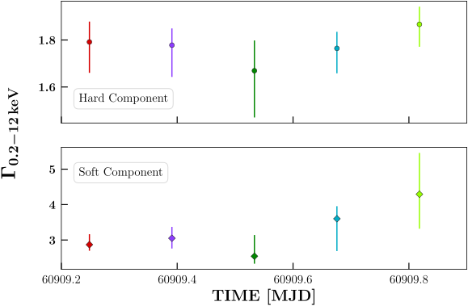
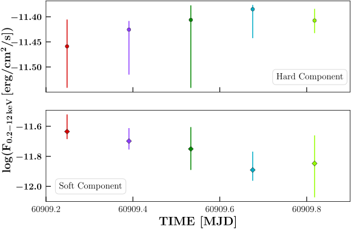
图注：XMM-Newton 数据中两幂律分量的 0.2–12 keV 光子指数（左）和流量（右）的时间演化。
怎么看这张图：分开看谱指数和归一，单点误差重叠并未排除整体趋势，也不支持把每个箱的变化都当显著。 软、硬分量随时间变化的直接谱时序证据
来源与置信度：arXiv HTML；source verified；https://arxiv.org/html/2611.03829v1/XMM_photon_index_10ks_LC_comp1_2.svg；https://arxiv.org/html/2611.03829v1/XMM_flux_10ks_LC_comp1_2.svg
图8
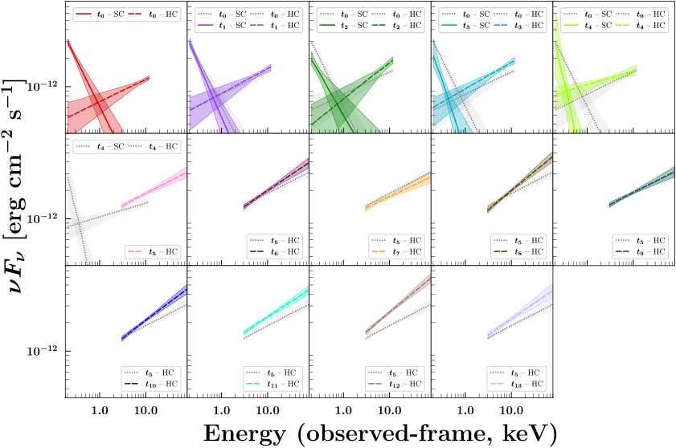
图注：从 XMM-Newton 的 t0 至 NuSTAR 的 t13，0.2–79 keV 能谱演化。实线为软、虚线为硬分量；线为流量后验众数，色带为 68% 最高密度区间。XMM 曲线乘 1.2 作交叉标定。灰色带和点线表示各阶段指定的早期参考谱。
怎么看这张图：先看 XMM 软尾退出，再比较 NuSTAR 硬谱在同一参考下变亮；拼接各时段不代表始终同时覆盖两个能带。 联结软尾消退与后续硬分量变亮，并显示非同时性边界
来源与置信度：arXiv HTML；source verified；https://arxiv.org/html/2611.03829v1/NuSTAR_XMM_SED_time.svg
强相关工作
Wierzcholska 与 Wagner 的耀变体谱谷讨论提供双分量解释背景；在本源中，XMM 的高软带灵敏度帮助单独跟踪软尾，并让 NuSTAR 延续硬成分，而不是把既有两峰图像当作新证据。
Liu 等对同次耀发的宽能段观测与两区解释为重要对照。本文对 X 射线谱演化给出更细约束，但没有重做并排的单区和两区时变拟合。结合它们应保留各自观测窗，不能把不同日的 UV、X 射线和 TeV 峰当同时发生。
同一事件 / 同类源线索：
（未提供）
相似工作：
（未提供）
基础理论 / 方法工作：
（未提供）
相反观点 / 张力线索：
（未提供）
2. SS 433 Eastern Jet Turbulence Revealed by Spatially-Resolved IXPE Data Analysis
- 来源：arXiv / astro-ph.HE
- 链接：https://arxiv.org/abs/2611.03846
- 作者：Ningyue Fan, Jack T. Dinsmore, Roger W. Romani
- 公告 / 来源日期：2026-11-04
- 阅读层级：重点精读
- 评分：novelty 8/10，importance 8/10，relevance 10/10，final 9.70/10
- 推荐理由：LeakageLib重析IXPE把SS433延展东喷流的头、脊、鞘分开，实测空间偏振差异与VHE粒子加速磁场直接相关；需核查比较模型、区域串扰、显著性和湍流推断。
中文题目：IXPE 把 SS 433 东喷流分成三区：边缘偏振降低，湍动增强仍待确认
做了什么：SS 433/W50 东侧延展喷流在 X 射线与甚高能伽马波段发光，高能粒子输运对磁场排列和速度剪切敏感。作者重分析 2023 年 IXPE 观测，以 Chandra 高分辨率亮度图预测 IXPE 的事件来源，在逐事件似然中加入能谱、仪器偏振泄漏以及三类背景，把喷流分成头部、脊柱与鞘层。用传统矩法和神经网络两套事件重建时，三分区相对单区的整体拟合改善均超过约 3σ。
各区电矢量偏振角与近南北方向相容，因而在光学薄同步辐射解释下，投影磁场大致沿东西向喷流。鞘层偏振度较低，但并非每区都显著探测到偏振。用各向同性随机场映射，鞘层的随机场／有序场之比较高，单独与头部或脊柱相比只有约 1–1.8σ；由速度剪切激发的 Kelvin–Helmholtz 不稳定性是可能解释。
为什么重要：早期 IXPE 分析主要得到整个亮区的一个偏振值。引入形态和背景约束以后，可以问有序场是否只存在于终止冲击、鞘层是否额外消偏。这给非热辐射模型加入了空间信息。较强的多区模型证据与较弱的湍动差异可同时成立，必须按两个统计问题解读。
理论 / 观测 / 仪器方法价值：方法价值在于不给光子硬分区，而以位置和能量给出来源权重，并让点扩散、偏振泄漏与带偏振背景进入同一个前向模型。可复用于延展高能源多模板分析，但不同仪器图像必须按能段和响应相配，背景外推与模型重叠要进入误差。
为什么应该关注：SS 433 的延展甚高能辐射使它适合 IACT 研究微类星体加速。如果外侧更湍动，可能改变电子输运与冷却的位置，可用 X 射线形态与分能段 TeV 形态共同检验。但偏振只约束投影、加权的场；文章未拟合 TeV 粒子传播，也未直接看到不稳定性波。
展开详细解读：文章讲解、背景、理论、重点章节、图表与相关工作
文章详细讲解
科学问题是冲击下游的场为何仍沿喷流，以及鞘层的速度剪切是否已让磁场变乱。同步辐射电矢量垂直投影场，多个场方向相加可降低偏振。低偏振度本身既可能来自小尺度扰动，也可能来自未解析的有序场弯折。
作者用 Chandra 曝光校正图减掉背景后，按两台仪器的有效面积转换到 IXPE 能段，建立头、脊、鞘的空间权重。LeakageLib 同时利用事件位置和谱信息，处理偏振泄漏、W50 天体背景、带电粒子及额外软光子。它避免把靠近界线的每个光子都硬算到单一区。
在和早期相同的 2–5 keV 矩估计方案中，单区偏振度 49±11% 与早先的 52±14% 相容。扩展到 2–8 keV 并引入三分区后，整体模型改善。各区角度没有明显系统转向，而鞘层偏振度较低，支持偏振结构沿喷流存在变化。
解释边界在于随机场映射依赖各向同性、幂律电子及磁倾角，各区后验仍重叠。剪切导致混合可以解释较高湍动比，但视线结构也可能消偏；应以更长曝光和独立的空间及磁流体模型比较这些机制。
关键结果是怎么做出来的
图 1 的 Chandra 三色图和 IXPE 两能段图先给形态约束。上下两排对应单区与三区及不同视场，颜色表示亮度或能段，不是偏振度；位置权重须通过 IXPE 点扩散和泄漏响应变成仪器中的预测。
图 2 和谱拟合将天体光子背景、粒子及与探测器有关的软背景分开。作者检查扩大视场的稳定性；背景仍在每个探测器的图像内假定均匀。计数大部分来自背景，简单用一个无偏振稀释常数不够。
单区矩法的 49±11% 与旧谱偏振结果相容。神经网络重建在 2–5 keV 的单区值约 40±9%，误差变小；两套重建源于同一观测，不是两个可独立相乘的显著性。
非重叠的矩法示例给头、脊、鞘约 43±15%、29±11%、12±14%，整体改善约 3.15σ。重叠模型的拟合更好，但脊与鞘的 Stokes 系数相关约 55%。应比较图 3 的联合轮廓，而不是硬排序三个单点。
图 4 把偏振后验转为随机场比；头与脊的典型值不高于约 1.5，鞘层常不低于约 1.8 且有更长尾部。两两比较约 1–1.8σ。整体三区改善与该两两物理量比较口径不同，均不等于发现剪切不稳定性。
展开背景、理论、公式、模型和章节导读
背景知识
SS 433 的进动喷流持续把动能注入 W50。延展东喷流在离开中心后仍有非热 X 射线和甚高能辐射，提示高能粒子在下游存在或再次得到加速；磁场结构会改变同步冷却与粒子传播。
光学薄同步辐射的线偏振与投影场垂直，幂律电子在均匀有序场中给最大偏振。若视线内多个场方向混合，强度仍可很高但偏振被抵消。所以图中近零度的电矢量指向不意味着磁场也朝北。
IXPE 由光电子方位的统计调制估计偏振，单个事件没有唯一电矢量。弱延展源的分区估计对点扩散、成像重建和背景很敏感。Chandra 能给高分辨率亮度模板，但不能替代 IXPE 偏振测量。
Kelvin–Helmholtz 不稳定性可在喷流与外介质速度差较大时产生涡旋和磁扰动，边缘偏振下降与此相容。磁场拉伸、场弯折和未解析亮度结构也会改变偏振，必须保留这些竞争解释。
基础理论 / 方法脉络
用归一 Stokes 参数表达偏振，角度有双角周期。多区域信号必须先以亮度加权相加 Stokes，再换回偏振度和角，不能直接平均几个区域的偏振度。
位置、能量和探测器响应决定一个事件来自各区域或背景的权重。在重叠模型中，同一光子对脊和鞘都有概率贡献，拟合自然出现协方差。探测角重建与位置还可耦合，需显式处理泄漏。
幂律电子的谱斜率决定均匀场的同步辐射最大偏振。实际值低于这个极限可用随机场解释，但只有在指定倾角、各向同性和亮度权重下，才能把偏振后验变成磁场幅值比。
讨论速度剪切时，Alfvén 速度给磁张力传递扰动的尺度。较高马赫数允许较弱的张力抑制，但真实不稳定性的增长还取决于场方向、速度差和界面尺寸，不能由本文偏振值单独算出。
公式与推导
先用教学记号定义无量纲的归一 Stokes 量。偏振角 $\psi$ 的周期为 180°，双角使 $q,u$ 相加时仍保留角信息。
理想响应下，光电子方向 $\varphi$ 的双角调制含满偏振的仪器调制度 $\mu(E)$。这只是说明事件统计的教学模型，实际 LeakageLib 还要加入响应和泄漏。
示意把事件 $i$ 来自分量 $k$ 的空间、谱概率权重 $w_{ik}$ 放入似然。权重非负且总和为一；在有重叠的区域，每个事件约束多个分量。
用相同数据比较三区和单区的对数似然（教学式）。统计量无量纲；转成显著性要计模型自由度及边界，和任意一个分量是否探测并非同一问题。
同步辐射极限随光子指数 $\Gamma$ 变，$\Gamma\simeq1.54$ 时最大偏振约 70%。不应把这里的光子指数当电子能谱指数。
论文式 1 在各向同性高斯扰动模型中把偏振转成随机场比。$i$ 为磁场与视线夹角；低偏振处关系陡，宜从后验抽样传播，而非只代中位数。
最后在非相对论磁流体近似比较流速与磁张力传播速度。$B$ 用高斯，$\rho$ 是质量密度。高马赫数只提供物理情景，不能替代界面不稳定性测量。
模型拟合 / 应用方法
空间拟合从 Chandra 背景扣除的强度开始，并用两台望远镜的有效面积转到 IXPE。三分区分别采用分离孔径或允许高斯脊和鞘重叠的几何；同一背景和数据下与单区比较才有意义。
谱权重以源区共同的吸收幂律为基线，光子指数约 1.52±0.12。W50 背景、粒子和软光子分开建模。扩大视场不显著改变结果，但背景在单探测器中仍假定均匀，不能由拟合显著性自动排除模板误差。
先用矩法在旧 2–5 keV 条件作交叉核验，再看神经网络和更宽能段。角和偏振度联合图用偏振度均匀的权重；零偏振附近角度不确定度变大，不能从轮廓的宽度直接得到单区检出概率。
重叠区的脊鞘协方差是模型几何所致；共有偏振角方案提高整体显著性也不增加独立数据。将后验通过倾角模型转成湍动比后应比较两两分布；论文没有重建真实磁流体扰动、增长率或 TeV 辐射机制。
重点章节 / 结果段落怎么读
- 第 II 节、图 1：确认 Chandra 强度如何转成位置权重。
- 第 II.3 节、图 2：区分三类背景及各探测器的谱响应。
- 第 III 节、表 1 和图 3：先核同能段单区基准，再读三区模型与单区后验的不同口径。
- 第 IV.1 节、图 4：追踪角和偏振后验如何传给磁扰动比。
- 第 IV.2 节：将速度剪切解释与其他消偏情景比较。
关键图表与解读
图1
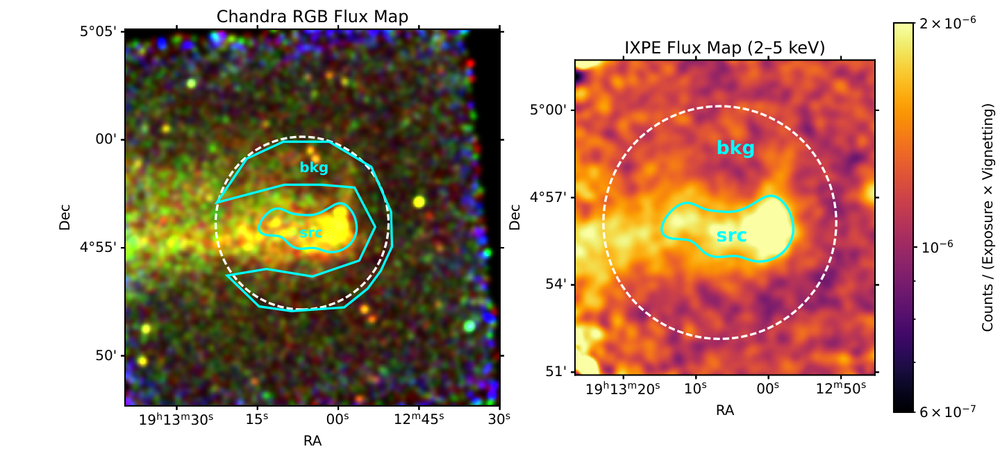
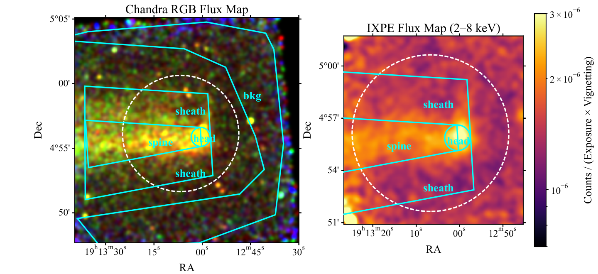
图注：Chandra 与 IXPE 曝光校正亮度图。左图红、绿、蓝分别为 0.5–1.2、1.2–2.0、2.0–7.0 keV；右图上为 IXPE 2–5 keV、下为 2–8 keV。青线为源区或 Chandra 背景区，白虚线为 IXPE 视场；上下对应单区与三区。
怎么看这张图：这是亮度与视场图，不是偏振图。先看脊和鞘在 IXPE 响应下为何需要概率权重。 核对几何分区与响应输入
来源与置信度：arXiv HTML；source verified；https://arxiv.org/html/2611.03846v1/ixpe_chandra_paper_reg.png；https://arxiv.org/html/2611.03846v1/ixpe_chandra_3reg.png
图3
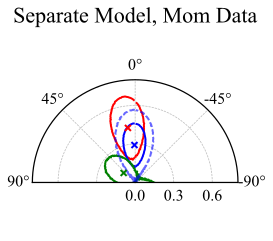
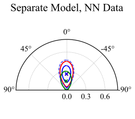
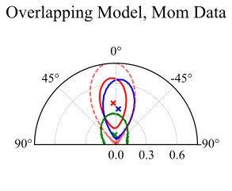
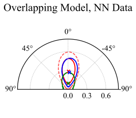
图注：不同模型的电矢量偏振角、偏振度轮廓。叉为最佳值，实线为约 1σ，虚线为各拟合最强约束分量的约 2σ；红、蓝、绿分别为头、脊、鞘。偏振角从北向东计，喷流轴约 90°；轮廓采用偏振度均匀先验。
怎么看这张图：低偏振附近角范围变宽。整体三区改善不意味着每区有高显著偏振。 保留联合后验与区域退化
来源与置信度：arXiv HTML；source verified；https://arxiv.org/html/2611.03846v1/papd_contour_3sep_mom.svg；https://arxiv.org/html/2611.03846v1/papd_contour_3sep_nn.svg；https://arxiv.org/html/2611.03846v1/papd_contour_3gaussian_mom.svg；https://arxiv.org/html/2611.03846v1/papd_contour_3gaussian_nn.svg
图4
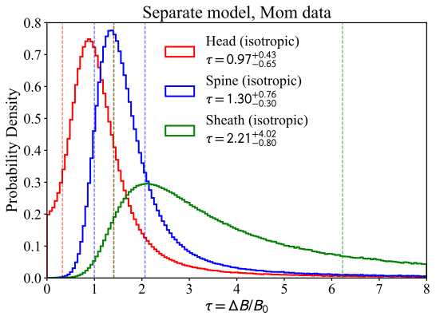
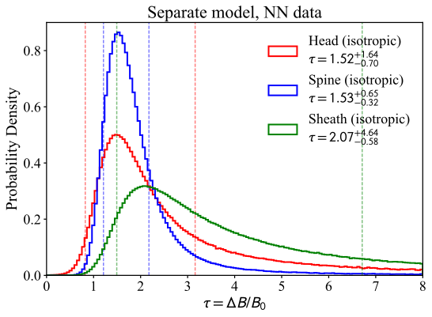
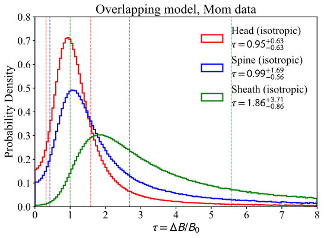
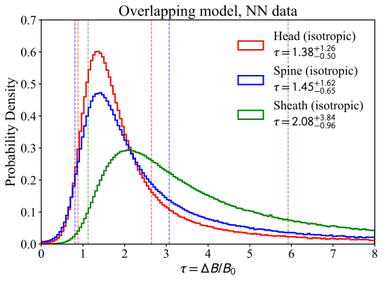
图注：不同拟合给出的湍动比 τ 的概率密度。红、蓝、绿对应头部、脊柱和鞘层；竖虚线标约 1σ 范围。
怎么看这张图：鞘层分布偏高但仍与其他区域重叠；这是假定随机场和倾角后的后验，不是直接测得湍动。 展示条件性物理解读与两两比较边界
来源与置信度：arXiv HTML；source verified；https://arxiv.org/html/2611.03846v1/tau_distribution_3sep_mom.svg；https://arxiv.org/html/2611.03846v1/tau_distribution_3sep_nn.svg；https://arxiv.org/html/2611.03846v1/tau_distribution_3gaussian_mom.svg；https://arxiv.org/html/2611.03846v1/tau_distribution_3gaussian_nn.svg
强相关工作
先前的 IXPE 单区分析发现东喷流投影磁场与轴相容。本文在相同能段先复现谱偏振，再借位置和能谱权重提供分区信息，使用的是同一次 IXPE 观测，不能算独立重复探测。
Chandra 跨年图像为源分区提供更细的形态，也支持位置漂移相对 IXPE 点扩散不大；地面甚高能观测则提供加速区的另一能段参照。两者都没直接测随机场比，后续需要更长偏振曝光和剪切磁流体模型验证边界是否稳定。
同一事件 / 同类源线索：
（未提供）
相似工作：
（未提供）
基础理论 / 方法工作：
（未提供）
相反观点 / 张力线索：
（未提供）
3. Radiative relativistic reconnection powering the hard-state emission of X-ray binaries: synchrotron-driven pair loading, MeV tail, and seed photons
- 来源：arXiv / astro-ph.HE
- 链接：https://arxiv.org/abs/2611.05307
- 作者：Valeriia Rohoza, Maria Petropoulou, Hayk Hakobyan, Despina Karavola, Lorenzo Sironi
- 公告 / 来源日期：2026-11-04
- 阅读层级：重点精读
- 评分：novelty 8/10，importance 8/10，relevance 10/10，final 9.70/10
- 推荐理由：3D PIC自由粒子同步MeV尾、光子吸收产对和软种子回馈形成可计算的盘冕证据链，直接关联Cygnus X-1；精读要分清PIC内冷却与后处理级联。
中文题目：Cygnus X-1硬态的三个光子来源：三维重联怎样连接百keV峰、MeV尾和软种子
做了什么：黑洞X射线双星硬态的百keV峰常用康普顿散射解释，但这只回答了软光子怎样被抬到硬X射线，仍需要说明软种子从哪里来、MeV尾由谁产生。本文考虑Cygnus X-1式的高磁化电子–正电子盘冕。三维电流片中的磁通绳并非沿重联电场无限延伸，一部分粒子能够暂时逃离束缚，在电场中持续加速，再被卷回强场区域发出高能同步光子。作者先用三维粒子模拟量出冷却通道的能量份额，再把受此限制的注入谱输入均匀盘冕的辐射计算，跟踪高能光子的吸收、次生对的冷却和逃逸光谱。
数值例中，入流电磁功率约四成走逆康普顿，约一至两成走同步辐射；这些不是观测直接分解的功率。盘冕模型中约1.5 MeV以上的注入同步光子开始明显被吸收，少量逃逸光形成与实测硬态相容的MeV尾；吸收产生的次生对可提供量级为一的汤姆孙光深，并放出约0.13 keV附近的软光子。用它们作为重联区康普顿种子有能量预算上的可能性，尚未实现对产生、反馈、几何和偏振同时自洽的模型。
为什么重要：以往用盘冕解释硬峰、另给MeV尾指定喷流，或者用额外非热电子把外来的软光子上散射，都有物理可行性。本文增加的关键联系是：同一三维重联中的高能同步光既能在可逃逸端留下尾，又能在被吸收端产生对并供给软光。这让尾和种子不再是两个彼此独立、可以任意调的输入。它提供一个可用能量账本和频谱测试的替代解释，但多种机制仍可能给相似谱形，不能据这项计算排除喷流。
理论 / 观测 / 仪器方法价值：方法价值在于把微观动力学、区域功率预算和后续辐射转移分层。先在粒子模拟中检查入流电磁能与粒子、场、辐射的出流总账，并用同步和康普顿拖曳测定功率比；再用一组允许的功率比驱动独立的光子–轻子方程。解析极限可以预判阈值、削弱和增对方向，数值解检查这些标度的失效处。对其他高能致密源也可复用，但应同步报告几何、磁化、种子与目标场，以及哪些环节仍由外部给定。
为什么应该关注：高能偏振、尾部截止和软成分的共同变化比单一硬峰更能区分盘冕和喷流。本文将MeV同步尾与种子联系到吸收的同一能量预算，因此可以设计多能段协同检验；但文中没有算出逃逸MeV偏振度，也没有做观测响应折叠的联合拟合。阅读时应关注磁化或引导场改变时自由粒子比例、吸收光深和软种子会如何连带变化，特别是空间非均匀盘冕是否仍支持相同反馈链。
展开详细解读：文章讲解、背景、理论、重点章节、图表与相关工作
文章详细讲解
科学问题。 硬态光谱在百keV附近出现主峰，同时在更高能量留有尾部。若仅有热康普顿化，散射电子如何维持能量、低能种子如何进入散射区，以及谁提供非热尾，仍是不同的问题。作者考察一种闭合的候选路径：磁重联供能，低能粒子和磁岛整体运动贡献硬峰，高能自由粒子出同步光，部分同步光产生次生对；这些对冷却产生新的软种子。
作者怎么做。 首先估算十倍太阳质量黑洞盘冕的磁场、紧致度和逃逸时间，把一次粒子加速、辐射反作用和同步自吸收的能标排出层次。然后用Tristan v2在三维对等离子体电流片中演化粒子和电磁场，人工按粒子能量平滑切换两类辐射拖曳，直接算各通道做功。最后用一团均匀球体近似盘冕，用LeHaMoC跟踪谱在区内的光子对产生、自吸收、逆康普顿与逃逸；这里注入谱形不是从PIC直接逐光子传给仪器，而是用粒子谱和既有观测构造，再受模拟功率比限制。
关键结果。 较低能的粒子受到康普顿拖曳但仍保持显著整体运动，高能粒子谱则由同步损失改变。模型的同步/康普顿功率比约0.25–0.5时，后处理逃逸尾与Cygnus X-1的MeV观测相容。名义模型在约1.5 MeV被吸收显著改变，软次生谱峰约0.13 keV，比相同能量处外推的康普顿注入成分约高三倍。这给种子供给的可行性，而没有直接观测到这批软光子或测量次生对的密度。
局限和下一步。 模拟冷磁化10与名义盘冕估值约2000不等；同步快冷却不充分、用很弱的引导场，且PIC不含产生对的反馈。后处理的均匀球形与实际电流片的薄层几何不同，光子的夹角分布会改变吸收阈和光深。要检验其是否真的主导硬态，应把产对加载、光子输运、种子反馈和偏振纳入同一空间模型，随后用多历元联合光谱而非单一图上的相容性验证。
关键结果是怎么做出来的
先从冷却与加速时间比较开始。若磁能密度高、区不大，电子能在逃逸前辐射。仅在X点短时加速的能量约由上游每粒子的磁能决定；三维自由阶段可继续加速，所以谱中出现能够产生MeV同步光的非热成分。这里要区分真实盘冕的参数估计和粒子模拟受限的尺度比。
再看图3的对照：仅康普顿、仅同步、两者平滑切换在能谱上各有作用。低能处整体运动可占主导，高能部分近似强冷却幂律，测得粒子指数约2.8。该比较说明两个通道有连续承接，不表示自吸收光子已在PIC中实际输运；阈值是有效处方。
第三步是功率闭合。模拟在约3至10个光穿越时间的统计稳态内计量入流与出流，粒子动能、场和辐射之和大致守恒。图5给出的同步/逆康普顿比是实际拖曳功率之比；若把尚可冷却的逃逸粒子都计入，估计可到0.5–0.9，后一组值是外推而非实测模拟效率。后处理采用0.1、0.25、0.5、1检查结果稳定性。
第四步利用阈值说明高能光为何少逃逸。几十MeV光子可与几keV及以上的硬态目标光碰撞产生对。光子越硬，可用的目标光能量越低，目标数更多。解析均匀估计显示逃逸谱相对注入变陡；靠近阈值或指数截止，精确斜率不能用该渐近式直接给出。名义数值例的显著吸收约在1.5 MeV，图6显示改变后的尾可延至更高能。
第五步读被吸收功率的去向。新生轻子冷却后低能数目较多，可产生量级为一的散射深度；其同步辐射到自吸收转折附近逐渐放出。解析得到约35 eV，数值约130 eV，供种子的功率比阈也从约0.02改为约0.1。两者同意方向和量级，但差别暴露了近阈截面与谱简化的限制，不能说解析精确预言了软峰。
最后才比较观测。注入硬谱先用既有Cygnus X-1数据设定，软种子和MeV尾的图示一致性检查另有价值，却不能将已用于标定的硬峰再算成独立验证。没有同时拟合多种盘冕/喷流和种子模型，也没有计算仪器在吸收与空间分布下的偏振响应。下一轮数据应共同约束软峰、尾、偏振和时变关系。
展开背景、理论、公式、模型和章节导读
背景知识
黑洞X射线双星的硬态并不是“盘消失”。观测的硬峰通常来自软光子穿过热或整体高速运动的散射介质，多次交换能量。盘本身、盘冕内部的同步辐射、以及更复杂几何都可提供种子，因此即使拟合出类似的硬峰，也未必知道光子的最初来源。
MeV尾提示粒子或辐射存在非热成分。热分布的典型截止与非热尾的延伸是两条不同线索，喷流和盘冕都可产生非热粒子。高偏振若得到稳健确认可提供额外几何信息，但源强、磁场方向和传播选择都会影响它，不宜从一条能谱唯一指认辐射区。
磁重联发生在方向相反的磁场相接处，磁拓扑重排将部分场能转成粒子加速和整体喷流。二维磁岛往往把粒子困在闭合结构内；三维磁通绳的有限长度给粒子暂时脱离并顺重联电场持续增能的机会。高能粒子进入横向强磁场时同步辐射更强，这让过去忽略的MeV通道在能量账本上变得可能。
高能光穿过致密辐射场并不全能逃逸。两个光子能在足够的质心能量下变成电子和正电子；它们的能量会流向后来的低能光子。于是吸收既削弱高能尾，也可能增加散射粒子和软种子。本文的目标是检查这几步的数量级能否在同一假设下同时成立。
基础理论 / 方法脉络
紧致度把能量密度、区尺度和散射截面合在一起，描述在一个穿越时间内损失是否强。磁紧致度高并不保证所有粒子净同步冷却：低能同步光能在同一区域被再吸收，把能量返还给轻子。作者因此以能量阈值区分有效逆康普顿冷却与高能同步冷却，用平滑切换代替全能量辐射输运。
对同一电子，重联电场给的做功受场强和速度限制，辐射损失随电子能量快速增长。达到平衡时定义辐射反作用极限。在局部垂直磁场很弱或俯仰角很小时，粒子可先继续加速，再在强垂直场区放出高能光；典型烧蚀能标不是任意区域的硬上限，模型用截止变化检验这一点。
光子对产生必须同时看两光子能量和夹角。近乎平行时即便能量很高也难满足阈值；同能量的迎头碰撞最容易。文中球区采用各向同性平均。产生对后，每个轻子承担一部分高能光子的能量，快冷却使低能粒子累积，而逃逸及湮灭决定总数。因此光深约一只是相互竞争的量级推断。
在均匀区内持续注入光子的模型里，光子可从不同深度逃逸。稳态逃逸率由注入、吸收和跨区时间一起决定，光深大时逃逸份额近似随光深倒数下降。这个内部注入问题不能直接套一个外部光束穿过屏幕的指数衰减；精确曲线仍取决于几何、源项和散射。
公式与推导
一、用尺寸和磁场估计能量密度。 令 $R$ 为盘冕代表尺度，$U_B$ 为磁能密度，$n$ 为总对粒子数密度，论文式(2)–(3)给出：
这是高斯制；$\ell_B$、冷磁化 $\sigma$ 和光深 $\tau_T$ 无量纲。名义 $B\sim10^8$ G、$R\sim3\times10^6$ cm，取光深量级一得磁化远大于一。这是先验尺度估计，不是独立测出盘冕成分。
二、加速若无损失可达何处。 若粒子以接近光速沿 $E_{\rm rec}=\beta_{\rm rec}B$ 运动一个穿越时间，论文式(4)的最大洛伦兹因子为：
电荷乘电势差给能量。这个数只提供可用长度上的上限，实际损失会先截住谱。
三、冷却能否在逃逸前发生。 对高能粒子的经典同步或汤姆孙散射，辐射功率按能量密度 $U$ 和 $\gamma^2$ 增长。由能量除以功率、再除以跨区时间，得到式(5)的尺度：
比值小于一才有快冷却。论文为高能同步与低能逆康普顿指定不同的有效损失区间，不能忽略自吸收或直接把汤姆孙表达式延至所有能量。
四、同步反作用极限。 对俯仰角约直角的粒子，将同步拖曳与电场加速相平衡，论文式(6)写为：
同步特征光子能量正比于 $B\gamma^2$，代入此极限后主要随 $\beta_{\rm rec}$ 而非 $B$ 变；文中名义值约16 MeV，基准注入截止45 MeV另含俯仰角和重联率的不确定余量。
五、从光子能量到产对阈值。 论文式(20)以碰撞角 $\chi$ 表示质心不变量；产对要求：
因此迎头的45 MeV光子需要约5.8 keV及以上目标光。这里能量用同一单位，阈值为能量平方；上散射的硬态谱恰好供给这样的光子。
六、阈值积分给吸收。 沿代表路径 $R$，以目标光谱数密度 $n_\varepsilon$ 和角平均截面求论文式(21)：
能量积分给每体积光子数，再乘截面积和长度成为无量纲。渐近区目标谱为 $n_\varepsilon\propto\varepsilon^{a-2}$，低阈值让可吸收目标更多，文中近似得到 $\tau_{\gamma\gamma}\propto\varepsilon_\gamma^{1-a}$。
七、由吸收和逃逸得到尾。 用论文式(24)作教学稳态整理，若吸收率为 $\tau_{\gamma\gamma}/t_{\rm adv}$、逃逸率为 $1/t_{\rm adv}$：
因此对数光度的注入指数 $b$ 在渐近段变为 $b+a-1$（式26）。数值曲线还含真实近阈截面和有限截止，不能把这个指数当作对整个MeV尾的精确拟合。
八、吸收还会改粒子数。 将吸收产生率与轻子逃逸平衡，用论文式(30)估次生轻子的汤姆孙深度：
这里 $L_2$ 是同步谱归一，非全部频带的总功率。模型中估得深度量级一；湮灭可修正这一结果，不能反推每个真实盘冕必由次生对组成。
九、把冷却通道的功率接回软光。 粒子模拟求通道损失功，辐射模型以两种积分光度比为输入：
前一式力乘速度是功率，后一条件是次生同步谱的低能自吸收转折。作者按 $\xi$ 扫描数值稳态；软峰高于该能量的外推逆康普顿谱只表示种子供给可行，并不完成反过来修改电流片的反馈求解。
模型拟合 / 应用方法
观测输入和基线。 作者以Cygnus X-1既有硬态光谱为例，采用约2 kpc距离，对1 keV以上部分用截断幂律描述康普顿分量：对数光度低端指数0.7、指数截断约159–160 keV。这是预先匹配谱形和归一，不能理解为联合拟合磁场、盘冕尺寸与粒子注入的后验。同步注入折点取100 keV，截止45 MeV，并依据快速冷却的粒子谱设置斜率。
粒子模拟输入。 三维Harris电流片、冷磁化10和0.1倍翻转场的引导场；辐射损失用连续拖曳在自吸收阈值的洛伦兹因子3或5附近平滑切换。选择只开一类冷却的对照组，再扫描两类反作用极限，检查低能谱和高能谱能否各受相应机制控制。模拟的磁化与尺度分离远小于物理估算，因此不是把箱中γ直接等比例搬到天体。
功率统计与外推。 在3至10个光穿越时间对出入功率作平均，排除施加边界条件的区域，并分别统计仍以电磁、粒子和辐射形式出区的能量。同步高能粒子有一部分逃逸前未充分冷却，故区内的同步份额是该数值口径的下限。把逃逸动能按优势冷却方式加入只能给快冷却上端估计；附录半箱对照主要检验固定无量纲冷却尺度下的相似性。
独立辐射计算。 LeHaMoC保持磁场约一亿高斯和硬注入谱不变，扫描同步/逆康普顿总光度比。半径按指定功率效率0.8与重联供能预算随该比值调整，模型不是固定所有参数只改变同步归一。计算约三个穿越时间达稳态，输出逃逸谱、次生对和软同步光，再与解析趋势及观测点比较；改变注入折点和截止对软峰的影响也另测。
模型失效方式。 强引导场可能阻止足够多自由粒子加速，低磁化、含质子及盘冕空间非均匀性会改写能量分配和产对深度。解析35 eV对数值130 eV以及供种阈约五倍之差显示近阈细节并不稳。论文给的是一条可行的谱与功率链，未用观测误差和替代谱模型算出来源排他显著性。
重点章节 / 结果段落怎么读
- 第II节：从磁场、尺寸和光深的假设到能标层次，读清真实盘冕与粒子箱的参数不可直接混用。
- 第III节：从光子对产生阈、光深到逃逸谱与次生对；比较吸收前后谱和软种子来自被吸收部分的能量账本。
- 第IV节图3、5：从粒子谱的控制实验走到有物理约束的同步/逆康普顿功率比，辨认实测与假设所有逃逸粒子再冷却的上端估计。
- 第V节图6、7及附录B：检查尾部相容区、软峰、光度比和谱参数敏感性；保留辐射区几何固定的条件。
- 第VI节：偏振是可检验的后续预测方向。文章列出了引导场、粒子组分、空间几何和自洽反馈仍欠缺的步骤。
关键图表与解读
图3
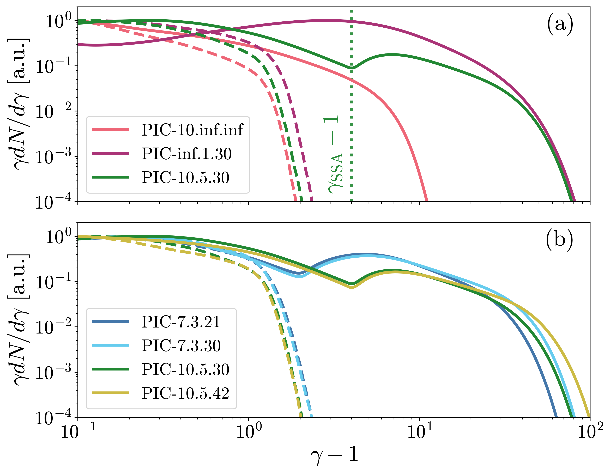
图注：三维粒子模拟的时间平均能谱。实线含粒子内部及整体运动，虚线仅整体运动；(a) 比较只逆康普顿、只同步及在自吸收阈值两侧切换冷却的算例，(b) 比较不同反作用极限及阈值。横轴为粒子洛伦兹因子减一。
怎么看这张图：低能区整体运动在冷却后仍显著，高能尾逐渐贴近同步主导谱。阈值是模拟的损失处方，图中没有在粒子箱内输运真实光子。 证明两类损失在粒子谱上的分工并连接后续功率计量。
来源与置信度：arXiv HTML；source verified；https://arxiv.org/html/2611.05307v1/figures/fig2_spec.png
图5
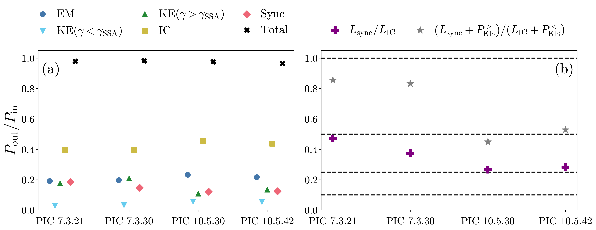
图注：同时含两类冷却的模拟的功率账本。(a) 时间平均输出功率按入流归一，分电磁、粒子动能、逆康普顿与同步；同次模拟的点横向略移。(b) 实际同步/逆康普顿损失比约0.25–0.5，另标按逃逸动能最终辐射估计的上端。横虚线为后续辐射计算选用的0.1、0.25、0.5与1。
怎么看这张图：对照实算通道与残余动能，区分箱内实际辐射和充分冷却条件下的上端估计。 给后处理注入光度比的微观约束。
来源与置信度：arXiv HTML；source verified；https://arxiv.org/html/2611.05307v1/figures/fig4_power_avg.png
图6
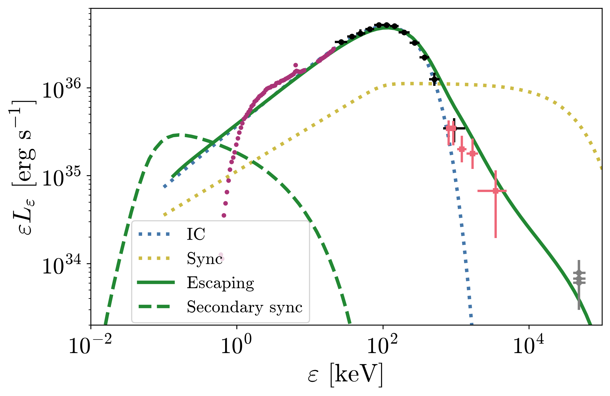
图注：同步/逆康普顿注入总光度比0.5的盘冕稳态谱。点线为两种注入成分，实线为高能部分经产对吸收后的逃逸注入谱，虚线为次生对冷却的同步辐射；观测点来自论文所用Cygnus X-1硬态数据。横轴为光子能量，纵轴为每对数能段光度。
怎么看这张图：从硬注入谱看约1.5 MeV后吸收，再追到约0.13 keV的次生软峰。硬峰部分参与模型标定，软峰是模型给出的种子供给而非独立测量。 串起吸收前后谱、MeV逃逸尾和次生种子。
来源与置信度：arXiv HTML；source verified；https://arxiv.org/html/2611.05307v1/figures/SEDs-fiducial-time.png
图7
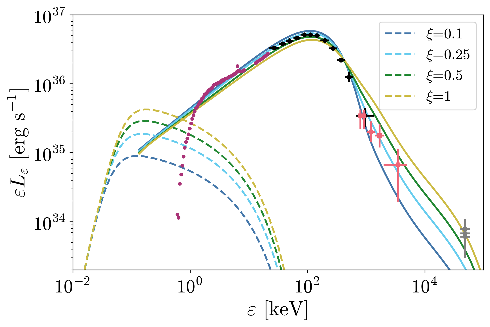
图注：四种注入同步/逆康普顿总光度比的稳态光子谱。实线为处理后的逃逸注入谱，虚线为冷却次生对的同步分量。取0.1、0.25、0.5、1分别计算，半径按对应的重联供能与总光度重新标定。
怎么看这张图：比较MeV尾的归一和次生软峰相对硬谱外推的强弱。改变光度比同时改变供能选定的尺寸，因此不是完全固定几何的一维实验。 检验软种子与尾的结论对光度比的敏感度。
来源与置信度：arXiv HTML；source verified；https://arxiv.org/html/2611.05307v1/figures/SEDs-comp-xi.png
强相关工作
Beloborodov的辐射重联模型（文献3）与Sridhar等的磁岛康普顿计算（文献44）提供百keV硬峰的机制背景。本文仍采用磁岛整体运动散射的框架，新增的是三维自由粒子能产生更硬同步光，并以吸收次生对提供软种子。Zdziarski等的Cygnus X-1高能观测（文献49）既参与硬注入谱的标定，也是比较逃逸尾的来源，不能把全部谱点都算为独立预测。
Zhang等（文献51、52）指出三维重联中自由粒子的幂律和加速机制；本文进一步加入不同能区的冷却和辐射转移。Groger等的重联偏振计算（文献14）说明种子位置影响康普顿偏振，与“软种子在层内生成”相互联系，但本文没有完成逃逸MeV偏振的比较。不同辐射区的检验需要偏振和时序信息补上谱的退化。
同一事件 / 同类源线索：
相似工作：
（未提供）
基础理论 / 方法工作：
- https://doi.org/10.3847/1538-4357/aa8f4f
- https://doi.org/10.1093/mnras/stab2534
- https://doi.org/10.3847/1538-4357/ac2e08
相反观点 / 张力线索：
（未提供）
相关简报
1. Photon arrival time lags in 3D radiative transfer with SKIRT
- 来源：arXiv / astro-ph.HE
- 链接：https://arxiv.org/abs/2611.04187
- 作者：Yuto Mochizuki, Bert Vander Meulen, Masahiro Tsujimoto, Peter Camps, Maarten Baes, Arno Lauwers, Gijs Vanoppen
- 公告 / 来源日期：2026-11-04
- 阅读层级：相关简报
- 评分：novelty 7/10，importance 8/10，relevance 8/10，final 8.70/10
- 推荐理由：SKIRT三维蒙特卡洛逐光子积累路径长度得到能量—时延响应；简单几何验证后可拆解AGN内外反射结构，具明确方法复用价值，应用仍为模拟。
中文题目：让三维辐射转移同时输出能谱和回声：SKIRT的光子到达时延
问题、方法与结论：X射线在致密源周围的气体中散射或被吸收后发出荧光，传播路径比直达光长。作者给蒙特卡洛辐射转移程序SKIRT加上逐光子路径长度记账：每次事件把一份按概率加权的虚拟光子送向观测者，用完整路径减去直达路径，按能量和时延共同分箱。先以薄、厚圆柱核对单次与多次散射，再用电离内区和中性环面模型，得到早晚两段响应以及铁荧光线相对邻近连续谱的时延差。
意义与贡献：单独的能谱会把相同线强却不同空间分布的气体混在一起，时间延迟能提供距离与多次传播信息。铁线与连续谱的延迟差既受几何影响，也受入射能量决定的穿透和吸收影响，不能直接把一个相关峰换成唯一半径。本文给出可以逐项检验这种退化的模拟工具。
可借鉴之处：适合复用的是先从蒙特卡洛产生瞬时能量–延迟响应，再与假设的连续源光变卷积，最后按仪器观测能段构造互相关。作者用解析圆柱和不同光深确认路径记账，并把典型荧光带和连续谱分别提取，能检查回声峰宽究竟来自空间展布还是源的自变。应用到实际数据还要加入响应、采样及噪声。
局限与关注点：环面与内区演示是设定几何的模拟，不是对真实活动星系核拟合；传播主要以路径长度除光速，未包括近黑洞相对论飞行延迟，也未纳入粒子复合等额外驻留时间。某些为加速辐射转移跳过的共振散射不记录路径，不适用于时延。研究射电或X射线回声时，应先核对所用物理过程是否真的近似即时。
图5
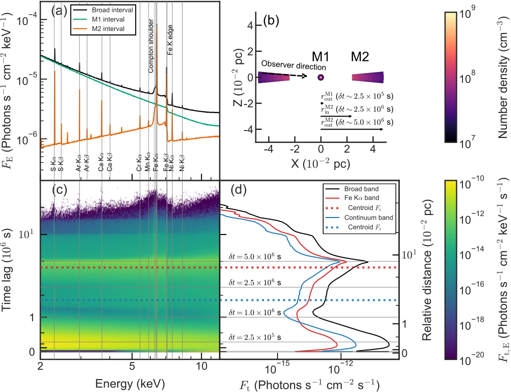
图注：SKIRT对双层活动星系核模型的时延响应。(b) 密度图显示中心照明源、电离内区M1和中性环面M2；(c) 为能量与时延二维分布；(a) 沿时延积分的能谱，分全时段、内区与外区时段；(d) 沿能量积分的时延，分别为2–12 keV、6.38–6.42 keV铁荧光和6.50–6.90 keV连续谱，点线标相应质心。零时延的灰带为直达光，副轴给几何距离。
怎么看这张图：在二维图沿不同轴投影可看出同一环面怎样贡献谱和回声。荧光和邻近连续谱延迟不同，与路径、穿透及多次散射都有关。 完整体现新方法联合输出，而非只展示单一光谱。
来源与置信度：arXiv HTML；source verified；https://arxiv.org/html/2611.04187v1/f03-02.png
2. Fermi-LAT Detection of Extended GeV Emission toward the Middle-aged Supernova Remnant G156.2+05.7
- 来源：arXiv / astro-ph.HE
- 链接：https://arxiv.org/abs/2611.04227
- 作者：Wei-Liang Xu, Qing-Wen Tang, Long Li
- 公告 / 来源日期：2026-11-04
- 阅读层级：相关简报
- 评分：novelty 7/10，importance 7/10，relevance 9/10，final 8.70/10
- 推荐理由：17年Fermi-LAT在G156.2+05.7方向检出约0.84度扩展GeV成分并比较CO前景模板和谱弯曲；强子/轻子比例与距离、切断能假设退化，简报保留。
中文题目：Fermi-LAT看见G156.2+05.7方向的扩展GeV辐射：气体与粒子成分还难拆分
问题、方法与结论：作者分析17年Fermi-LAT数据，将原目录点源、扩展圆盘、二维高斯和一幅前景CO气体图作为备选模板。约0.84°的68%包围半径显示信号明显扩展，高斯与圆盘无法可靠区分，但前景CO模板描述较差。在固定空间形状后，弯曲的对数抛物线比单幂律约优3.4σ，年尺度未见明显变化。射电和GeV联合拟合倾向包含强子过程，但强子主导的替代模型仍具可比性。
意义与贡献：先解决“信号是否扩展、是否只是前景”的问题，才能讨论超新星遗迹内部的粒子加速。这里比较了有实际速度归属的CO前景，并发现不能仅凭投影重叠把这团气体当靶。扩展和谱弯曲较稳，强子与轻子贡献则还依赖模型。两个问题的证据强度不同，不能由谱曲率直接宣布质子加速机制。
可借鉴之处：可借鉴的是用同一组射电与GeV数据比较单轻子、混合及强子主导模型，再扫描参考磁场和空间模板。谱能约束的是质子数与靶密度的乘积，把谱解换成粒子能量时应另行画出对气体密度的依赖。这样可以发现若全用稀薄内部气体，所需能量预算偏高，却不必把某个致密云硬指为发光位置。
局限与关注点：质子截止固定在1 TeV，因为现有数据分不清有无该截止；距离、磁场与靶密度也未联合确定。对比排斥的是最简一群电子模型，不能排除额外电子成分。两亮象限谱指数差仅约1.6σ，光学细丝对应只是一种解释；LHAASO目录未检出也没有该源专用上限，后续需更深TeV观测与独立气体图。
图8
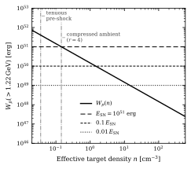
图注：单区轻子–强子模型中，质子在1.22 GeV以上的总能量随假定氢核靶密度变化。采用参考距离并固定谱所约束的质子归一与密度乘积；横虚线为典型10⁵¹尔格爆炸能量及其10%、1%。竖点划线是稀薄激波前密度0.036每立方厘米及最大强激波压缩后的0.14每立方厘米。
怎么看这张图：固定可见谱后，低密度要求更大质子能量。图的交点用于排查能量预算，不直接量出真实气体密度和填充因子。 显示最重要的谱退化怎样变成可检验的物理限制。
来源与置信度：arXiv HTML；source verified；https://arxiv.org/html/2611.04227v1/wp_vs_n.svg
3. Electromagnetic signatures of gradual magnetic dissipation in jets from supermassive black holes
- 来源：arXiv / astro-ph.HE
- 链接：https://arxiv.org/abs/2611.05322
- 作者：Stavros Dimitrakoudis, Maria Petropoulou, Stamatios I. Stathopoulos, Dimitrios Giannios
- 公告 / 来源日期：2026-11-04
- 阅读层级：相关简报
- 评分：novelty 7/10，importance 7/10，relevance 9/10，final 8.70/10
- 推荐理由：LeHaMoC扩展分段喷流且迭代跨段辐射传递，比较光子溢出和独立叠加并发现仍由同步主导；结论限参数化稳态耗散，简报。
中文题目：延展喷流中邻段光子会改变什么：跨段康普顿增强仍难追上同步辐射
问题、方法与结论：作者把由交替磁极性条带逐渐耗散的耀变体喷流切成一串区域。每段有独立的速度、磁场和非热电子注入；把别段射来的光按相对运动变换和距离稀释后作为种子，沿喷流来回迭代至稳态，再将各段结果转到观察者系。与只将独立段相加相比，跨段光子可在逆康普顿影响的频段把模型辐射提高到约三倍；但在所测参数下总谱仍主要由同步辐射贡献。
意义与贡献：每段自行发出的同步光并非唯一的康普顿种子，分段但完全隔离会低估邻段影响。本文同时展示两个结论可以成立：对本来较弱的高能成分，相对增强可观；对全喷流功率，它仍不足以造出许多耀变体的强康普顿峰。这给广泛耗散模型的适用范围一个具体限制。
可借鉴之处：可借鉴的是用多段速度决定各自观察角和相对多普勒变换，迭代跨区光子数密度，再以全谱及高能段积分分别检查收敛。对能量预算还应同时画沿程耗散和累积辐射：后段仍可耗散相当功率，但其磁化、电子注入和效率不等于前段，不能用局地强峰替代整个喷流积分。
局限与关注点：动力学沿用给定的条带磁耗散模型，区内均匀且光场近似各向同性，忽略段间光行时间，适合长稳态，不能直接解释快速耀发。宽线区、尘环及微波背景在特定距离可提高局地逆康普顿，千秒差距处的强相对增幅也不表示总谱由它主导。这里未联合拟合具体耀变体，其他耗散或外场配置仍需另测。
图4
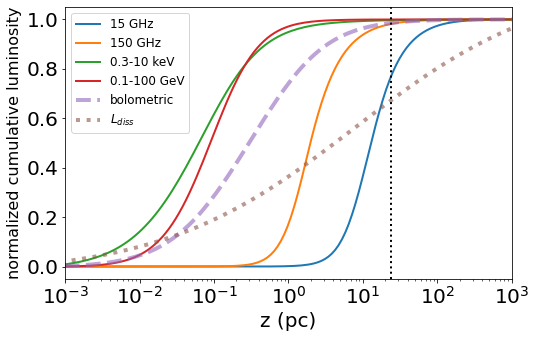
图注：基准分段喷流中，观察者系各能带光度（实线）、总光子光度（虚线）及耗散功率（点线）随沿喷流距离的累积剖面。各曲线分别按本身的最大值归一；竖线标出单位对数距离耗散达到宽峰的尺度。
怎么看这张图：比较累积发光近饱和与仍在下游耗散的区间。归一后高低差反映空间累积快慢，不是功率绝对比。 展示沿程能量耗散与实际辐射效率的区分，适合解释远区局地增幅。
来源与置信度：arXiv HTML；source verified；https://arxiv.org/html/2611.05322v1/Lcum_5e45_38m.png
4. Jets and winds from the most powerful compact object in NGC 5408
- 来源：arXiv / astro-ph.HE
- 链接：https://arxiv.org/abs/2611.03796
- 作者：Roberto Soria, Manfred W. Pakull, Christian Motch, Thomas D. Russell, Fabien Grisé
- 公告 / 来源日期：2026-11-04
- 阅读层级：相关简报
- 评分：novelty 8/10，importance 7/10，relevance 8/10，final 8.65/10
- 推荐理由：NGC5408 X-2有射电变化、P-Cygni外流、光学衰退和硬X点源联合证据，提供被遮蔽超临界候选；吸积功率、盘风/供体风/共包层仍非唯一。
中文题目：NGC 5408 X-2的强外流与弱视线X射线：一颗被遮蔽的超临界候选
问题、方法与结论：作者把NGC 5408 X-2的ATCA/VLA射电、HST/VLT光学及Chandra X射线对齐。紧致射电源多年亮度变化约五倍，与硬X点源和光学连续谱同位置；2010年光学宽线有P-Cygni型蓝移吸收，表明视线前方有高速外流，随后连续谱和宽、窄发射线都明显变暗。作者把紧致窄He II线用作硬电离通量的代理，发现直接可见的X射线难提供所需光子，提出高倾角、受遮蔽的超临界吸积与喷流解释。
意义与贡献：仅按视线上的X射线亮度选源，可能漏掉吸积功率主要进入风、喷流或被吸收的系统。这里最有力的是源位置、时变和电离需求三者相互制约：光学红连续谱自身不能提供高能电离光子，而射电变化和外流线又要求紧致、活动的能量来源。超临界模型因而值得检验，功率并非直接测得。
可借鉴之处：可借鉴的是先用点扩散函数与位置对照把紧致源和周围星云分开，再用紧致窄重组线估计最低电离光子数。扩展的He II星云和软X峰有位置偏移，附近候选沃尔夫–拉叶星也可照亮它；若把整团星云都算作同一紧致源，便会把外部电离误计为源功率。
局限与关注点：宽线半高全宽约1700 km/s并非唯一风速，蓝移吸收给另一速度尺度，电子散射也能拓宽翼。遮蔽强度、吸积功率及风究竟来自盘、供体还是共包层都不唯一。各波段历元不同时，最该跟进的是同历元的硬X、射电和空间分辨光谱，检验外流与吸积是否协同变暗。
图6
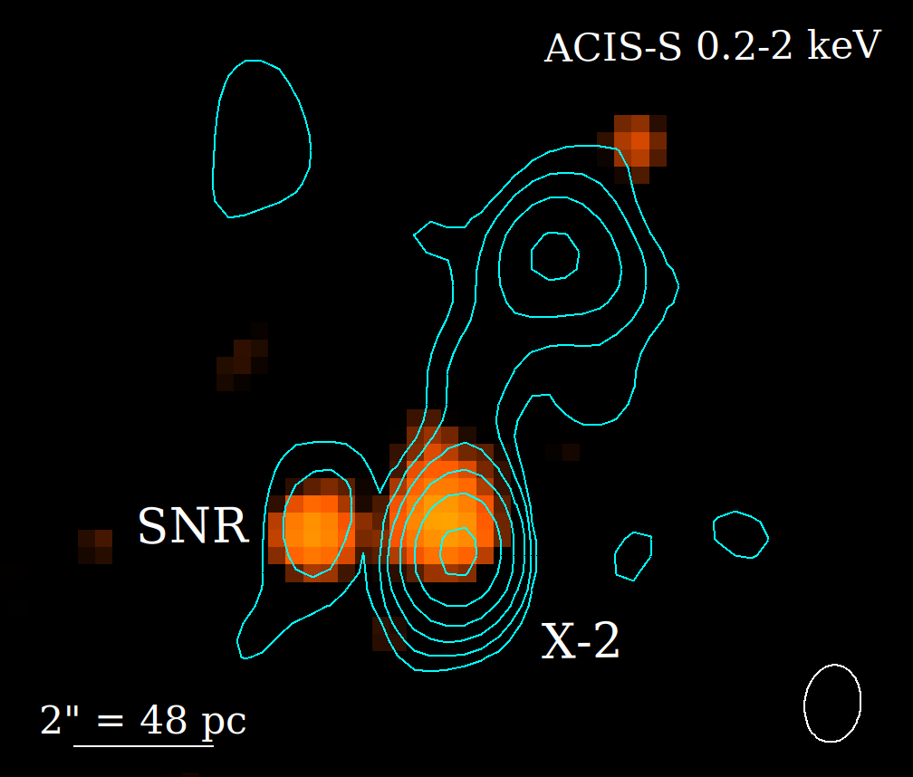
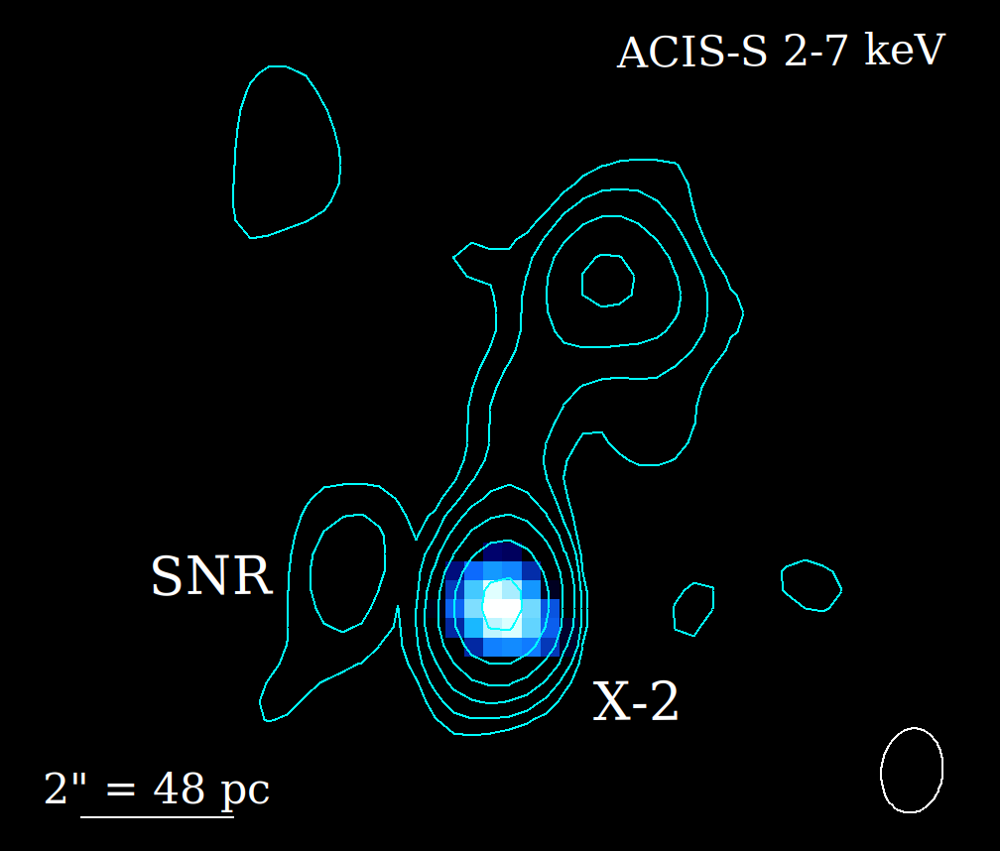
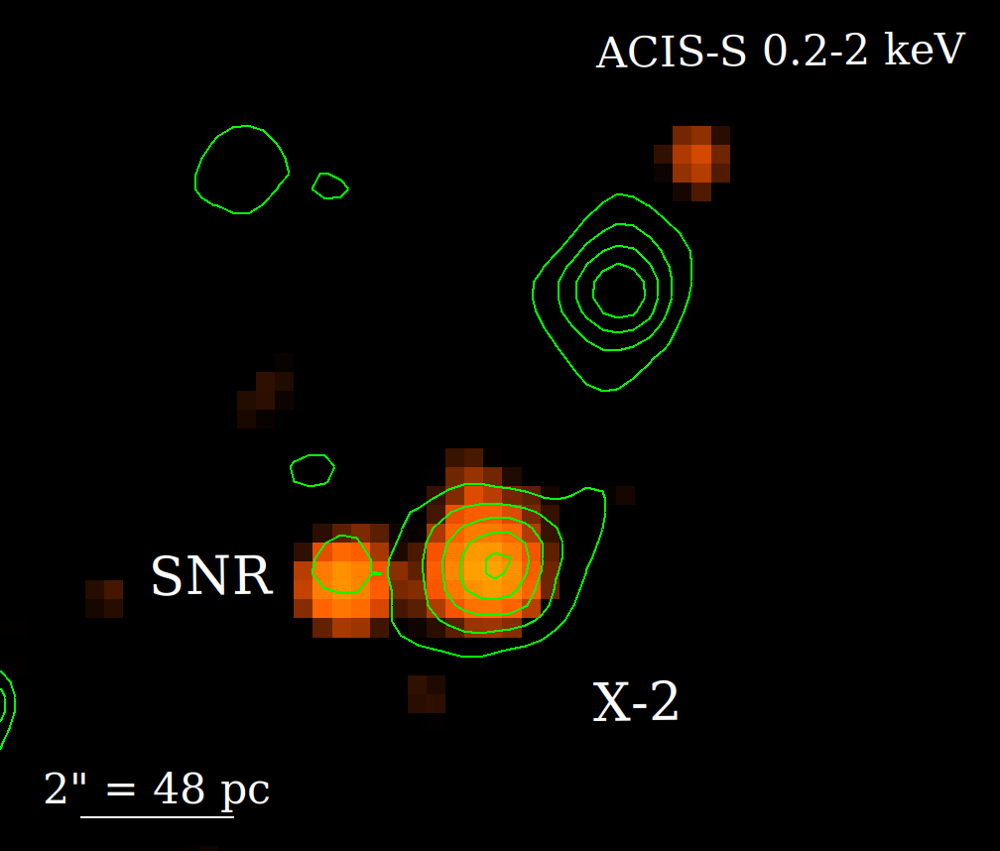
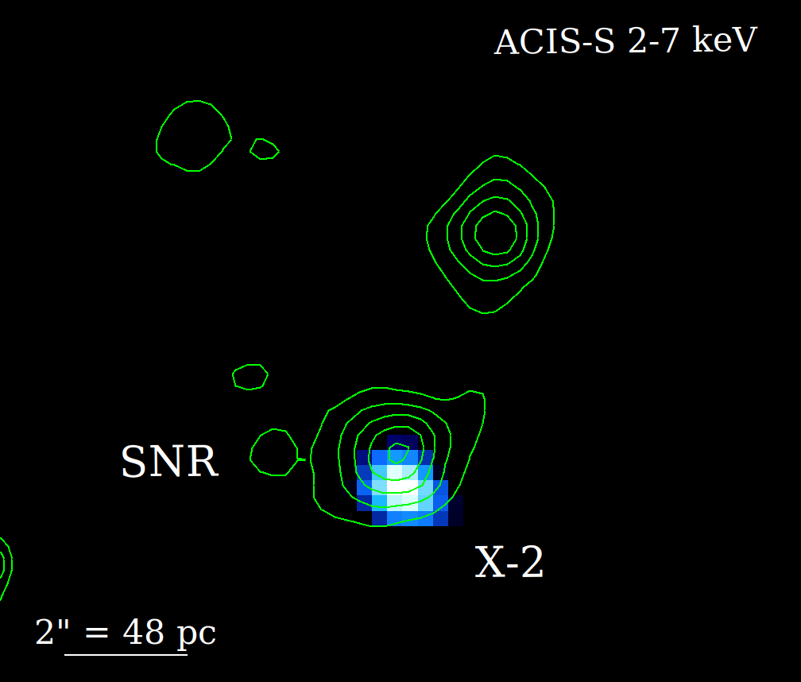
图注：NGC 5408 X-2的Chandra X射线与射电、氦线空间对照。左列为0.2–2 keV软X，右列为2–7 keV硬X；上排叠加ATCA 5.5与9 GHz射电等值线，下排叠加VLT/MUSE He II 4686埃等值线。软X成分比点扩散函数更延展，并偏向北侧的氦线峰；硬X点源和紧致射电及光学连续谱重合。
怎么看这张图：沿上下排比较软、硬峰相对射电与氦线的位置，区分紧致吸积源和周围弥散电离区；附近候选沃尔夫–拉叶星可能贡献后者。 验证不能把弥散软X和扩展氦线都归给同一紧致源。
来源与置信度：arXiv HTML；source verified；https://arxiv.org/html/2611.03796v1/paper_f3c.png；https://arxiv.org/html/2611.03796v1/paper_f3d.png；https://arxiv.org/html/2611.03796v1/paper_f4a.png；https://arxiv.org/html/2611.03796v1/paper_f4b.png
5. Quasi-normal Modes and Instabilities of Rotating Relativistic Stars
- 来源：arXiv / astro-ph.HE
- 链接：https://arxiv.org/abs/2611.03986
- 作者：Yong Gao, Masaru Shibata
- 公告 / 来源日期：2026-11-04
- 阅读层级：相关简报
- 评分：novelty 8/10，importance 8/10，relevance 7/10，final 8.65/10
- 推荐理由：完整GR耦合流体时空本征方程含外射边界，同时验证中性点、模式避交和径向坍缩阈值，实质推进快速旋转星的可计算谱；不是事件探测。
中文题目：快速旋转致密星的振荡：用复频率区分辐射失稳和动力学坍缩
问题、方法与结论：作者从广义相对论流体与时空的二阶作用量出发，同时求恒星物质位移与度规扰动。在中心和旋转轴保持正则，星表匹配并令随流体的压力扰动为零，外区用复坐标延拓只保留出射波。这样能直接得到快速均匀旋转星的复频率，实部是振荡频率，虚部给衰减或增长。MIT袋模型的奇异星分开显示惯性系和共转系的中性点；APR4中子星算例还得到流体模、惯性模与强阻尼时空模的谱及模式混合。
意义与贡献：快速旋转耦合不同角向结构，不能只沿用慢转修正或固定时空近似。作者在固定角动量序列上将静态最大质量拐点与基本准径向频率归零分别计算，所测状态方程的动力学阈值在稍高中心密度。这说明静态拐点和星体真正开始无振荡坍缩不是同一个判据，尽管数值差距可以很小。
可借鉴之处：可借鉴的是用两种独立条件核对坍缩阈值：静态扰动保持每个流体元的比角动量，再比较时域稳定性所对应的复频率零点。对模态交遇，作者同时看实频间隙、虚部与位移成分的交换，避免只凭两条频率曲线接近就宣布同一种模式或同一阻尼机制。
局限与关注点：结论限冷、均匀旋转的平衡星和线性扰动。样本中的密度阈次序与一项早期多方状态方程结果存在张力，不能升级为所有状态方程和差分旋转星的定理。计算未包括真实黏性，因此共转中性点标记潜在黏性失稳，不代表已模拟其增长。也不能由线性增长时间直接预测非线性饱和和引力波可测振幅。
图3
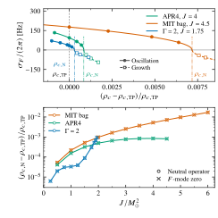
图注：轴对称基本准径向F模的中性点。上：固定角动量的不同序列，实线圆点为振荡，虚线空方框为非振荡增长；曲线插值复频率平方的实部，灰线及彩色竖线标静态转折及中性算符零点。下：两个方法得到的中心密度相对转折的偏差，圆点为静态中性算符，叉号为F模频率归零。
怎么看这张图：比较灰色转折线附近的非零振荡频率，再看彩色零点。两个独立判据相符，所测模型中的动态阈值略高于静态转折密度。 精确区分平衡序列转折和实际径向失稳。
来源与置信度：arXiv HTML；source verified；https://arxiv.org/html/2611.03986v1/neutral_offset_J.svg
6. How Fast do Black Holes Spin?
- 来源：arXiv / astro-ph.HE
- 链接：https://arxiv.org/abs/2611.04361
- 作者：Chen Yuan, Vitor Cardoso
- 公告 / 来源日期：2026-11-04
- 阅读层级：相关简报
- 评分：novelty 8/10，importance 7/10，relevance 8/10，final 8.65/10
- 推荐理由：全文核验500组是轴对称固定Kerr、有限耗竭环面。五配置转折有有用对照，强磁化只有0.37–0.71范围；未验证三维持续供给或独立磁通重分组，按有限结果保留简报。
中文题目：磁化吸积能把黑洞推到多快：五组数值环面给出不同的自旋转折
问题、方法与结论：作者用BHAC在固定Kerr时空中做500组轴对称广义相对论磁流体计算。五种初始环面各扫描100个自旋，分别改变磁环个数、环面位置、磁化和径向磁极性调制。用准稳态窗口的视界能量及角动量通量，计算给定初始自旋当下应升或降，再用符号改变估计平衡点。参考模型约0.88，较远环面约0.78，弱净磁通的径向调制模型可到0.98；强磁化例只有0.37–0.71转折区间，不能报一个精确平衡自旋。
意义与贡献：质量增加会改变自旋的归一，即使角动量仍在流入，也不保证无量纲自旋上升。磁应力和喷流还会改变视界角动量预算。因此同一黑洞在不同供给状态下可被推向不同的自旋，实测高自旋既可能对应长期弱磁通吸积，也可能保留过去增长历史的信息。本文量化的是一组受控初态中的差异。
可借鉴之处：可复用的是计算视界通量后比较同一自旋处的准稳态时间中位数和波动区间，再在固定自旋网格上找变号。作者平移取样窗检查转折是否改变，并对近极端支试改磁调制相位、波长和环面参数。图中90%范围是模拟时间波动的5–95分位，不是观测自旋的置信区间。
局限与关注点：每组都是二维轴对称、固定背景、有限环面耗竭，没有验证三维湍流、持续供给及真实磁通状态切换。500组覆盖参数网格并不等同于大量独立天体；弱磁通解释也不能替代实际通量与力矩拆分。对Sgr A*的长于万亿年量级演化时间依当前低吸积率和归一，若高自旋估计成立，只说明现态难以建立它，不能区分早年吸积与并合。
图3
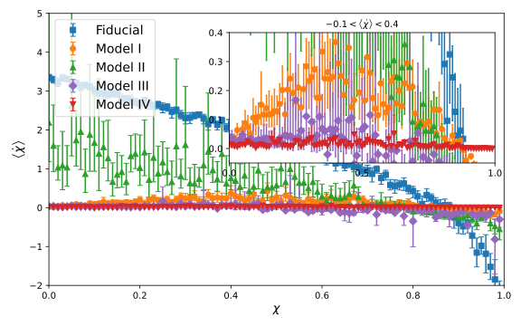
图注：BHAC五种数值环面的无量纲自旋变化率随初始黑洞自旋变化。中心曲线为准稳窗口的时间中位数，范围是同窗5至95百分位，纵轴采用代码单位。横向零线标志由自旋上升转为下降的区间。
怎么看这张图：读取各曲线变号，比较弱磁通调制模型的近高自旋与强磁化宽转折；时间百分位范围不能当作天体自旋测量的不确定度。 直接呈现五模型结果和转折，避免把区间报告成单一数。
来源与置信度：arXiv HTML；source verified；https://arxiv.org/html/2611.04361v1/compare.svg
7. Quark deconfinement as a natural trigger of Type-I critical collapse: black holes from neutron stars deemed stable
- 来源：arXiv / astro-ph.HE
- 链接：https://arxiv.org/abs/2611.04679
- 作者：Hrishikesh Borthakur, Ritam Mallick
- 公告 / 来源日期：2026-11-04
- 阅读层级：相关简报
- 评分：novelty 8/10，importance 8/10，relevance 7/10，final 8.65/10
- 推荐理由：球对称GR演化中一阶相变令静态径向稳定星跨越I类临界坍缩，给质量阈差并核对不稳定模和有限转换率；适用性受EOS、对称和相转变处方限制。
中文题目：相变可以让静态稳定中子星坍缩：存在稳定终态不保证能到达
问题、方法与结论：一颗亚稳强子星的核心若突然转为夸克物质，压力支撑可在动力学时间内降低。作者在球对称相对论流体代码中，从未额外扰动的强子星切换到含一阶相变的状态方程。典型算例中，即使同重子质量仍有一个静态稳定的混合星，内流也能越过不稳定平衡而坍缩。动力学阈值比静态重子质量上限低约0.117个太阳质量；临界附近的演化先停留在对应的不稳定混合星附近，再迁移或继续坍缩。
意义与贡献：静态质量–半径图只能说明某个平衡解存在，不能保证突然转换的星体会被它俘获。本文把这点做成可验证的Ⅰ类临界问题：初态越靠近分界，停留时间越长，时间标度可用不稳定星的径向增长率解释。在给定模型里，这还允许坍缩形成的黑洞与稳定中子星质量范围重叠。
可借鉴之处：作者用初始中心密度二分定位分界，分辨率改变后重新定位，再从平滑中心密度的离开时刻提取寿命，和独立线性径向模的时标相比较。额外速度扰动的混合星族也得到同类临界规律。若要核验别的状态方程，应同时比较静态对应解、真实演化结局与临界寿命，区分相变数值噪声底和物理标度。
局限与关注点：相变尚未被观测确认。计算忽略转动、非径向动力学和引力波，触发和混相、有限转换速度都是参数化。转换时间接近核心动力学时间时，允许坍缩的质量窗口明显变窄；0.117太阳质量的差值只属于指定状态方程和瞬时模型，不是中子星或轻黑洞质量的普适界。球对称模型也没有给出可观测引力波信号。
图1
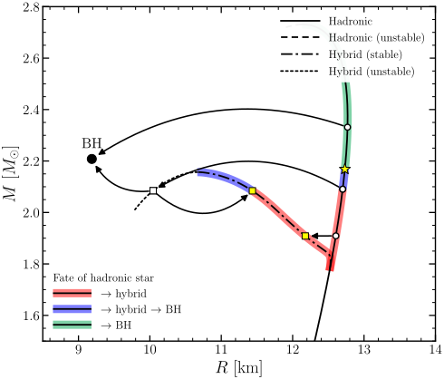
图注：冷中子星在无额外扰动的核心相变后的质量–半径及结局。黑实线为强子星，点划线为混合星，点线表示不稳定支。固定重子质量转换时，红区迁移至稳定混合星，蓝区虽有同重子质量稳定解仍动力学坍缩，绿区无对应稳定解。黄色星号是静态质量阈，空方框是动力学分界处的不稳定临界星，箭头为演化示例。
怎么看这张图：先按相同重子质量连初态和静态对应解，再看红蓝分界。质量轴和重子质量匹配条件不可混读。 把本论文核心的静态可达性与动力学越阈放在原始证据图。
来源与置信度：arXiv HTML；source verified；https://arxiv.org/html/2611.04679v1/fig1.svg
8. Presupernovae Strongly Constrain Electrophilic MeV Bosons
- 来源：arXiv / astro-ph.HE
- 链接：https://arxiv.org/abs/2611.03813
- 作者：Yu Cheng, Damiano F. G. Fiorillo, Chui-Fan Kong, Edoardo Vitagliano
- 公告 / 来源日期：2026-11-04
- 阅读层级：相关简报
- 评分：novelty 8/10，importance 8/10，relevance 7/10，final 8.65/10
- 推荐理由：将爆前长时辐射和较低等离子频率纳入MeV玻色子产额，推导511 keV贡献可给更强耦合界；需核对正电子传播、星族及约束区域。
中文题目：爆炸前的重元素燃烧如何限制MeV暗光子：从恒星产额到银河511 keV线
问题、方法与结论：作者跟踪太阳金属丰度、初始质量9–60个太阳质量的MESA恒星，从碳、氧到硅燃烧积分暗光子产生，再计算穿出恒星后衰变成正负电子的数量。爆前核心虽然比坍缩超新星冷，却维持较高温度更久，且低密度等离子体对MeV暗光子的屏蔽较弱。将逃出的正电子在银河中的扩散和湮灭并入模型，用INTEGRAL/SPI的511 keV经度分布限制额外贡献。约1–3 MeV内可比所对照的超新星限制严格一至两个数量级。
意义与贡献：比较新粒子源不能只比较最高温度：应对产额的温度、密度依赖沿真实演化积分。爆前阶段积累的粒子可在很长时间后贡献银河弥散线，限制来自淡银河盘区域不能容纳过强的新通量，并不需要把整个银心511 keV来源解释为暗光子。
可借鉴之处：可复用的前向链条是从不同初质量恒星的时序计算粒子谱，乘衰变逃逸概率，再按恒星质量函数、爆发率和空间分布累加。观测比较只计模型超过数据的经度箱，避免随意扣除未知背景；同时分别改变源分布、正电子扩散尺度和包层，检查哪一条边界受哪个假设限制。
局限与关注点：新限制依赖能衰变成电子对的质量及混合模型。耦合太强时，粒子可能在星体内衰变，或其额外冷却已改变恒星演化，不能再用未修改的MESA轨迹；图中明确标出这一域。正电子传播、包层与银河盘模板仍有系统误差。结论是模型贡献的上限，不是已经辨认出暗光子或511 keV线的主导源。
图1
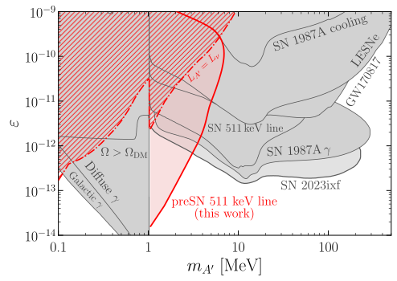
图注：MeV暗光子质量与动理学混合参数的限制。粉色为按9–60个太阳质量前身星质量函数、Ferrière旋臂源分布和1 kpc正电子传播抹宽计算的爆前511 keV排除区域。点划线上方部分阶段暗光子冷却超过中微子冷却，斜线标示不能保证采用未扰动恒星演化。灰色为文中对照的既有限制。
怎么看这张图：看粉色新增覆盖与灰区的关系，特别区分小混合一侧的通量限制和较强混合一侧的星内捕获或反作用。 直接展示新敏感范围和模型不能外推的边界。
来源与置信度：arXiv HTML；source verified；https://arxiv.org/html/2611.03813v1/fig1_bounds_IMF.svg
9. A semi-autonomous multi-agent pipeline for high-energy astrophysics research with enforced provenance and verifiable self-extension
- 来源：arXiv / astro-ph.HE
- 链接：https://arxiv.org/abs/2611.05251
- 作者：Fang Zhou
- 公告 / 来源日期：2026-11-04
- 阅读层级：相关简报
- 评分：novelty 7/10，importance 7/10，relevance 8/10，final 8.35/10
- 推荐理由：IXPE真实数据复现与植入缺陷实验定量暴露出处校验和交叉审代码的假阴性、假阳性；有工具审计价值，不把模型一致当科学发现。
中文题目：给自动X射线分析加可查出处：数字能追溯，代码正确性仍需另验
问题、方法与结论：作者用IXPE档案数据测试一套半自动分析流程：报告中的数字必须能追溯到工具记录、请求或文献位置；新工具还需经过重复运行、结构检查和另一模型审查，人决定是否提升为可信版本。复现Cygnus X-1硬态偏振时，14个比较量都在按双方误差合成的3σ内，不过偏振度结果系统偏低。65个植入缺陷中47个过了自动检查，交叉审查后仍有1个进入提交，同时69个无植入缺陷对照中有40个被审查拒绝。
意义与贡献：真实科学分析的风险不只在编造数字，也在程序用错权重、没有正确合并曝光或复制了旧产物。出处检查让这些数值可被追查，但不能自动证明方法正确。本文以人为植入和同源观测复现将两类风险分别量化，还展示了高查错率可能伴随较高的误拒成本。
可借鉴之处：实用做法是把输出数字绑定到具体软件、输入和结果记录，保留数据切分一致性与独立注入测试，再由熟悉仪器的人复核异常。若缺工具，明确标未测比填一个看似合理值更好。对IACT分析，可以借鉴这种组织方式核对响应、背景选择和各阶段计数，但需要用本阵列的真值注入及独立实现验证。
局限与关注点：基准集中在少数类似IXPE任务，植入缺陷并不代表真实故障分布；复现还共享源数据，3σ比较采用简化的误差合成。所有偏振度偏低正好说明通过一致性阈值仍可能有系统偏差。作者未量出人工核验时间和跨任务长期可靠性，模型审核的接受或拒绝也不能替代科学验证。
图8
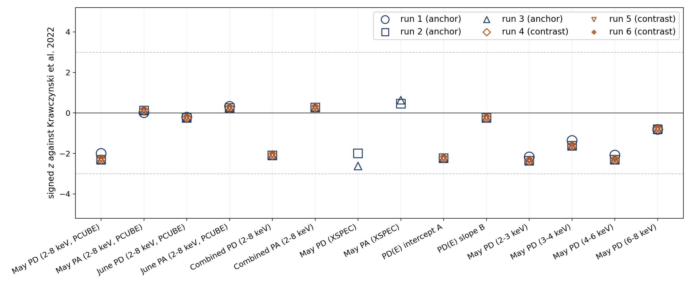
图注：同一Cygnus X-1偏振复现任务的六次模型运行，与14个预先指定的基准量比较。每列对应一个量，纵轴是运行值减发表值后除以合成误差的有符号偏差。空心与实心标记分别为两种模型配置；虚线标绝对偏差为3。未获得测量的运行不会为对应列添加数值。
怎么看这张图：先看偏振度的系统负偏差，再看误差范围和缺测。全部测量通过某个阈值与没有系统偏差是两件事。 直接给同源科学对照，补足报告出处与正确性之间的差别。
来源与置信度：arXiv HTML；source verified；https://arxiv.org/html/2611.05251v1/figures/fig_seat_recovery_overlay.png
10. Galactic-Scale Distribution of 10Be and Its Implications for the Early Solar System 10Be/9Be
- 来源：arXiv / astro-ph.HE
- 链接：https://arxiv.org/abs/2611.03808
- 作者：Yusuke Fujimoto, Steven J. Desch, Jiro Shimoda, Shu-ichiro Inutsuka
- 公告 / 来源日期：2026-11-04
- 阅读层级：相关简报
- 评分：novelty 8/10，importance 7/10，relevance 7/10，final 8.30/10
- 推荐理由：三维多相银河盘耦合低能CR和10Be产生输运，量化恒星诞生区相对均值的偏置，提供陨石同位素另一来源；太阳出生半径高度依扩散。
中文题目：早期太阳系的铍-10能否直接继承：银河宇宙线与恒星诞生区的空间关联
问题、方法与结论：陨石包体中的短寿命铍-10可来自太阳诞生后局部照射，也可能在母分子云里已经存在。作者用三维多相银河盘模拟，把宇宙线作为随气体演化并扩散的流体，分别跟踪银河宇宙线在星际气体中散裂生成的铍-10和遗迹内部生成后释放的部分，再计入输运和衰变。模型中新星继承的铍-10大多来自前一通道，遗迹贡献低于1%至约10%。中等扩散算例在太阳半径处，新星的同位素比中位数约为同环气体体积均值五倍。
意义与贡献：恒星并不从银河气体中均匀抽样；形成恒星的致密区也集中在宇宙线能量注入附近，平均星际介质会低估实际母云受到的照射。考虑这一空间相关性和早期银河可能更高的形成率，继承模型可以达到陨石所需比例。因此局地照射并非这组模型必需，但不能据此排除它在真实太阳系发生过。
可借鉴之处：可借鉴的是分别记账瞬发遗迹和持续银河背景，并比较新形成星粒子与同半径气体，而不只画全盘均值。把密气体产额降低十倍再跑敏感性算例，能检查低能粒子是否进入母云这一具体系统误差。稳定铍-9未随时间演化，另用假定丰度和梯度构造比值，应将分母先验与铍-10输运分开检验。
局限与关注点：双流体用总宇宙线能量近似控制亚GeV散裂，依赖近似固定谱形；最内盘宇宙线梯度还比伽马资料所指示的更陡。早期星形成率的倍数与铍-9径向梯度也不是模拟直接得出。图中与陨石比值相交的位置强烈依这些假设，不能据此精确确定太阳出生半径。
图8
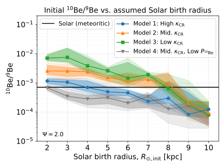
图注：四个宇宙线传播模型中，新星继承的初始铍-10/铍-9比值随假定太阳出生半径变化。600 Myr快照取最近5 Myr形成的星粒子，按1 kpc分箱；符号为中位数，深浅阴影为25–75和16–84百分位。均匀铍-9对氢丰度取2.4×10⁻¹¹，铍-10乘以早期星形成率假定倍数2；黑横线为陨石推断的约7×10⁻⁴。
怎么看这张图：这是一组出生半径假设的扫描。曲线分离显示扩散与致密区产额会改变交点，不能把黑线交点当作稳健的太阳出生半径。 把同位素继承的量级证据和位置参数退化放在同一图。
来源与置信度：arXiv HTML；source verified；https://arxiv.org/html/2611.03808v1/initial_10Be_9Be_assumed_solar_birth_radius.svg
11. SN 2019qem: decades of extreme mass loss before the explosion of a luminous, long-lived Type IIn supernova
- 来源：arXiv / astro-ph.HE
- 链接：https://arxiv.org/abs/2611.05328
- 作者：Joysankar Majumdar, Mariusz Gromadzki, Takashi J. Moriya, David A.H. Buckley, Priscila J. Pessi, Nada Ihanec, Szymon Kozłowski, Łukasz Wyrzykowski
- 公告 / 来源日期：2026-11-04
- 阅读层级：相关简报
- 评分：novelty 7/10，importance 7/10，relevance 7/10，final 8.00/10
- 推荐理由：长时标IIn超新星的26条光谱和光学至红外光变约束壳层、风及电子散射；极端失质质量与历时仍须核对薄壳和风速假设。
中文题目：SN 2019qem的长尾光变与爆前失质：用线宽打破冲击功率退化
问题、方法与结论：作者结合扣除宿主的光度、26条光学谱和多年中红外数据，发现SN 2019qem峰值约7×10⁴³尔格/秒，氢线延续约两年，支持抛射物与致密周围气体相互作用。薄壳光变模型用氢α中宽及宽分量限制激波速度，偏好持续密风上叠一次爆前喷发。取风速100 km/s时，参考解为爆前约2.2年抛出约9个太阳质量、连续失质约0.62个太阳质量每年；到峰后544天，模型扫起约32个太阳质量。
意义与贡献：冲击辐射同时依赖气体密度、转化效率和速度的高次方。只拟光变能用更快激波抵偿较低密度，导致失质率看似小很多。该论文将同一对象的光度和线宽放在一起检验：给出约低30倍失质率的简单解析解所需速度过高，与谱线边界不符。这个比较比单报一组巨大质量更能说明证据强弱。
可借鉴之处：可复用的是先从光度获得辐射预算，再以谱线给壳层速度范围，并对爆炸能量与效率、失质率与风速分别报告能被数据约束的组合。结合宽翼形状、红蓝不对称和中红外变化，可把电子散射、遮挡及尘再辐射的影响分开考虑，而不是把最宽线翼直接等同物质速度。
局限与关注点：风本身没有分辨出精确速度，模型气体质量是平滑球对称条件下的等效量，盘状或团块介质可改变推断。光变残差有连贯的起伏，近峰和晚期线翼也不完全符合薄壳速度。爆前喷发来自模型，并未被历元监测直接拍到；约40个太阳质量的前身下限同样依赖质量账本，不能当作恒星的直接测量。
图9
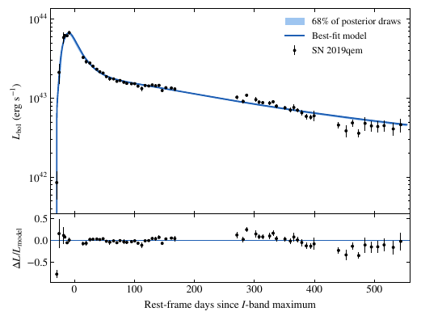
图注：SN 2019qem的总光度与薄壳星周物质相互作用模型。横轴是相对I波段极大值的静止系天数；上方黑点为总光度，蓝线为最大似然模型，浅蓝包围300条后验抽样曲线的68%。模型为双幂律抛射物进入稳态风并叠加一次高斯型喷发。下方为相对最大似然曲线的分数残差。
怎么看这张图：先读蓝线能否跟随长期下降，再看下方晚期相干偏差，不能只以平均拟合判断光滑风已解释全部数据。 同一原图展示偏好薄壳模型和真实残差，给质量推断的适用边界。
来源与置信度：arXiv PDF；source verified；https://arxiv.org/pdf/2611.05328#page=11
说明
评分由 LLM 给出初评，再由本地阈值策略过滤；IACT、TeV 伽马射线和高能中微子天文学按重点方向处理。